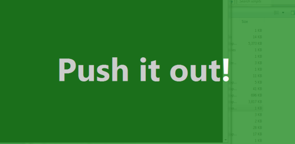

Push it out! Push ups every hour.
• http://joshua.poehls.me/2013/push-it-out-push-ups-every-hour./
Push ups. Every hour, on the hour. Can you handle it?
I’ve been motivated by a friend to start this challenge. Every hour, on the hour, I’m going to drop and do a set of push ups.
Remembering is the hardest part. Timers are easy to set but also easy to ignore. My solution is to make myself a massive nag screen that will flash every hour while I’m at work.

My strategy is working! I’m 7 hours into my day and haven’t missed a set. It feels great.
Join me!
My nag screen is just a PowerShell script and scheduled task. It really couldn’t be simpler. You don’t even need to be a geek to figure this out.
- Download the ZIP.
- Extract the files somewhere permanent. Moving them later will require you to manually update the scheduled task.
- Run pushitout.cmd to install the scheduled task.
- Run it again to see what it looks like.
The default schedule is to nag you every day, every hour, between 8am and 5pm. Feel free to customize this to fit your schedule, editing scheduled tasks is easy.
I’d love to hear how this works out for you, let me know in the comments!
Over achievers will notice that the Show-NagWindow.ps1 script lets you customize the message, font, and colors by passing in different parameters. Edit the obvious parts of pushitout.cmd to customize the nag screen to your liking.
Works on my machine! … which happens to be running Windows 7, .NET 4.5 and PowerShell V3. You’ll probably need admin rights on your machine in order to install the scheduled task.